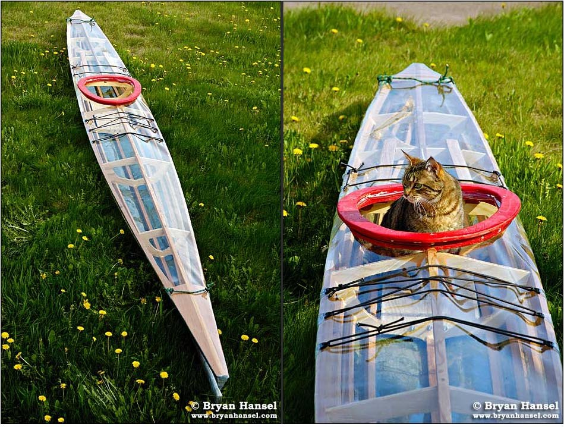

| (New) Nikumi by Bryan Hansel (US) | Menu Previous Page Next Page |
|
 Bryan Hansel from Minnesota has just completed a "Nikumi" Iqyax (Baidarka). The frame is constructed of cedar stringers, plywood cross sections, and a clear vinyl skin. Bryan has written a builders log of his Nikumi project. Use the {Back} key to return. |
|